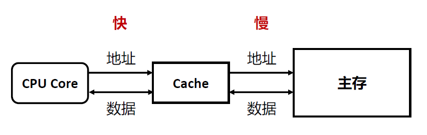
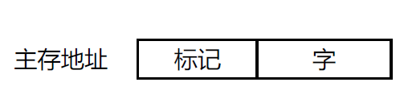

第8讲-高速缓冲存储器
Cache的目的和基本思路
- 问题：CPU的速度比内存的速度快，且两者差距不断扩大—内存墙。
- 解决：CPU和内存之间增加Cache。
- 解决内存墙带来的CPU和主存协作问题
- 在使用主存（相对大而慢）之余，添加一块小而快的cache
- Cache位于CPU和主存之间，可以集成在CPU内部或作为主板上的一个模块
- Cache中存放了主存中的部分信息的“副本”

Cache的工作流程
检查（Check）：当CPU试图访问主存中的某个字时，首先检查这个字是否在cache中
检查后分两种情况处理：
- 命中（Hit）：如果在cache中，则把这个字传送给CPU
- 未命中（Miss）：如果不在cache中, 则将主存中包含这个字固定大小的块（block）读入cache中，然后再从cache传送该字给CPU
如何判断是命中还是未命中?
- Cache通过标记（tags）来标识其内容在主存中的对应位置
局部性原理
- 定义：处理器频繁访问主存中相同位置或者相邻存储位置的现象。
- 时间局部性：在相对较短的时间周期内，重复访问特定的信息（也就是访问相同存储位置的信息）
- 空间局部性：在相对较短的时间周期内，访问相邻存储位置的数据
- 顺序局部性：当数据被线性排列和访问时，出现的空间局部性的一种
特殊情况 - 例如：遍历一维数组中的元素
- 顺序局部性：当数据被线性排列和访问时，出现的空间局部性的一种
- 利用“时间局部性”：将未命中的数据在返回给CPU的同时存放在Cache中，以便再次访问时命中。
- 利用“空间局部性”：将包含所访问的字的块存储到Cache中，以便在访问相邻数据时命中。
平均访问时间
- 假设p是命中率， 𝑇c 是cache的访问时间， 𝑇M 是主存的访问时间，使用cache时的
平均访问时间𝑇A为 - 命中率p越大， 𝑇c越小， 效果越好。
- 如果想要𝑇A< 𝑇M, 必须要求p>𝑇C /𝑇M。
- 难点：cache的容量远远小于主存的容量（随机访问时𝑝 = Cache容量/主存容量）
- 假设p是命中率， 𝑇c 是cache的访问时间， 𝑇M 是主存的访问时间，使用cache时的
Cache未命中的原因
- 义务失效（Compulsory Miss）/ 冷启动失效（Cold Start Miss）
- 第一次访问一个块时
- 例如：第一次访问一个数组，会发生义务失效
- 容量失效（Capacity Miss）
- Cache无法保存程序访问所需的所有数据块，则当某数据块被替换后，又重新被访问，则发生失效
- 例如： cache大小为8KB，如果需要重复访问一个16KB大小的数组，数组无法全部放入cache，会发生容量失效
- 冲突失效（Conflict Miss）
- 多个存储器位置映射到同一Cache位置
- 例如：有两个4KB大小的数组都映射到了相同的地址，需要来回访问，则发生冲突失效
- 义务失效（Compulsory Miss）/ 冷启动失效（Cold Start Miss）
Cache的设计要素
映射功能
- 实现主存块到cache行的映射
- 块号，块内地址
- 映射方式的选择会影响cache的组织结构
- 直接映射
- 关联映射
- 组关联映射
- 直接映射
- 把每个主存块映射到唯一可能得高速缓存行。其中：i=高速缓存行号，j=主存块号，m=高速缓存行数
- 优点：简单且便宜
- 缺点：对任何给定的块都只有固定的高速缓存位置。因此，如果一个程序重复访问两个需要映射到同一行中且来自不同块的字，则这两个块不断地被交换到cache中，cache的命中率将会降低，即发生冲突失效。称为抖动现象。
- 适合大容量cache：行数变多，发生冲突失效的概率降低； 硬件电路简单，增大容量对𝑇c的影响不明显
- 地址计算：
- 地址长度 =（s+w）位
- 块大小 = 行大小 = 2w
- 主存中块的数量 = 2s
- Cache中的行数 = m = 2r
- Cache容量 = 行大小 * 行数 = 2w+r
- 标记长度 = s - r
- Cache行号长度 = r
- 块内地址长度 = w
- 关联映射（全相联映射）
- 允许每个主存块加载到任何高速缓存行
- 优点：避免抖动。
- 缺点：实现复杂；搜索代价大。
- 适合容量较小的Cache：小容量更容易发生冲突失效；小容量检查的时间短。
- 地址计算：
- 地址长度 = （s + w）位
- 标记长度 = s
- 快内地址长度 = w

组关联映射
- 一种折中方案，结合了直接映射和关联映射的优点和缺点。
- k路组相联映射其中，i=cache组号，j=主存块号，v=cache组数，m=cache行数，k=每组行数。
- 地址计算
- 地址长度 = （s+w）位
- 组中行数 = k
- 组数 = v = 2d
- Cache中行数 = m = k*v
- 标记长度 = s - d
- 组号长度 = d
- 块内地址长度 = w

三种映射方式比较
- 关联度（Correlation）：一个主存块映射到cache中可能存放的位置个数
- 直接映射：1
- 关联映射：m
- 组关联映射：k
- 关联度越低，命中率越低，
- 关联度越低，判断是否命中的时间越短。
- 关联度越低，标记所占额外空间开销越小。
- 关联度（Correlation）：一个主存块映射到cache中可能存放的位置个数
替换策略
- 一旦cache行被占用，当新的数据块装入cache中时，原先存放的数据块将会被替换掉。
- 对于直接映射，每个数据块都只有唯一对应的行可以放置，没有选择的机会。
- 对于关联映射和组关联映射，每个数据块被允许在多个行中选择一个进行放置，就需要替换算法来决定替换哪一行中的数据块
- 常用替换策略：
- 最近最少使用算法（Least Recently Used, LRU）
- 先进先出算法（First In First Out, FIFO）
- 最不经常使用算法（Least Frequently Used, LFU）
- 随机替换算法（Random）
- 最近最少使用算法（LRU）
- 替换掉在cache中最长时间未被访问的数据块。
- 实现：每个cache行添加LRU位，长度为log2k位。
- 命中时，被访问的行的计数器清零，比其低的计数器加 1，其余不变。
- 未命中且该组还有空闲行时，则新装入的行的计数器设为0，其余全加1。
- 未命中且该组无空闲行时，计数值最大的那一行中的主存块被淘汰新装入的行的计数器设为0，其余加1。从计数器变化规则可以看出，计数值越高的行中的主存块越是最近最少用。
- 缺点：当程序中的分块局部化范围(即程序中某段时间集中访问的存储区)超过了 cache 组的大小时，命中率可能变得很低。例如，假设上述例子中的访存地址流是1，2，3，4，1，2，3，4，1，2，34而cache每组只有3行，那么命中率为0。这种现象称为颠簸(pingpong)或抖动(thrashing)
- 先进先出算法（FIFO）
- 策略：替换掉在Cache中停留时间最长的块。
- 实现：时间片轮转法或环形缓冲技术。
- 每行包含一个标识位
- 当同一组中的某行被替换时，将其标识位设为1，同时将其下一行的标识位设为0
- 如果被替换的是该组中的最后一行，则将该组中的第一行的标识位设为0
- 当将新的数据块读入该组时，替换掉标识位为0的行中的数据块
- 最不经常使用算法（LFU）
- 策略：替换掉cache中被访问次数最少的数据块。
- 实现：为每一行设置计数器
- 随机替换算法（Random）
- 策略：随机替换cache中的数据块
- 实现：随机替换
- 性能上只稍逊于其他算法，而且代价低。
写策略
缓存命中时的写策略。当cache中的某个数据块被替换时，需要考虑该数据块是否被修改。
- 如果没被修改，则该数据块可以直接被替换掉。
- 如果被修改，则在替换掉该数据块之前，必须将修改后的数据块写回到主存中对应位置。
- 写直达（Write Through）：所有写操作都同时对cache和主存进行。
- 优点：确保主存中的数据总是和cache中的数据一致，总是最新的（例如多CPU同步的场景）。
- 缺点：产生大量的主存访问，减慢写操作。
- 写回法（Write Back）：先更新cache中的数据，当cache中某个数据块被替换时，如果它被修改了，才被写回主存。
- 利用一个脏位（dirty bit）或者使用位（use bit）来表示块是否被修改。
- 优点：减少了访问主存的次数。
- 缺点：部分主存数据可能不是最新的（例如未发生替换但需要读主存的场景）。
缓存未命中时的写策略。
- 写不分配（Write Non-Allocate）：直接将数据写入主存，无需读入cache。
- 优点：避免cache和主存中的数据不一致。
- 通常搭配：写直达。
- 写分配（Write Allocate）：将数据所在的块读入cache后，在cache中更新内容。
- 优点：利用了cache的高速特性，减少写内存次数。
- 通常搭配：写回法。
- 写不分配（Write Non-Allocate）：直接将数据写入主存，无需读入cache。
行大小
- 假设从行的大小为一个字开始，随着行大小的逐步增大，则Cache命中率会增加
- 数据块中包含了更多周围的数据，每次会有更多的数据作为一个块装入cache中
- 利用了空间局部性
- 当行大小变得较大之后，继续增加行大小，则Cache命中率会下降
- 当Cache容量一定的前提下，较大的行会导致Cache中的行数变少，导致装入cache中的数据块数量减少，进而造成数据块被频繁替换
- 每个数据块中包含的数据在主存中位置变远，被使用的可能性减小
- 行大小与命中率之间的关系较为复杂
- 行太小，行数太多反时间局部性
- 行太大，行数太少反空间局部性
Cache数目
一级v.s.多级
- 一级
- 将cache与处理器置于同一芯片（片内cache）
- 减少处理器在外部总线上的活动，从而减少了执行时间
- 多级
- 当L1未命中时，减少处理器对总线上DRAM或ROM的访问
- 使用单独的数据路径，代替系统总线在L2缓存和处理器之间传输数据，部分处理器将L2 cache结合到处理器芯片上
- 一级
统一v.s.分立
- 统一（指令数据混合式）
- 更高的命中率，在获取指令和数据的负载之间自动进行平衡。
- 只需要设计和实现一个cache。
- 分立（指令和数据分离）
- 消除cache在指令的取值/译码单元和执行单元之间的竞争，在任何基于指令流水线的设计中都是重要的。
- 统一（指令数据混合式）
本博客所有文章除特别声明外，均采用 CC BY-NC-SA 4.0 许可协议。转载请注明来自 Sprooc！
评论